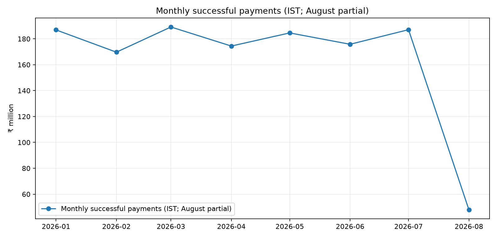
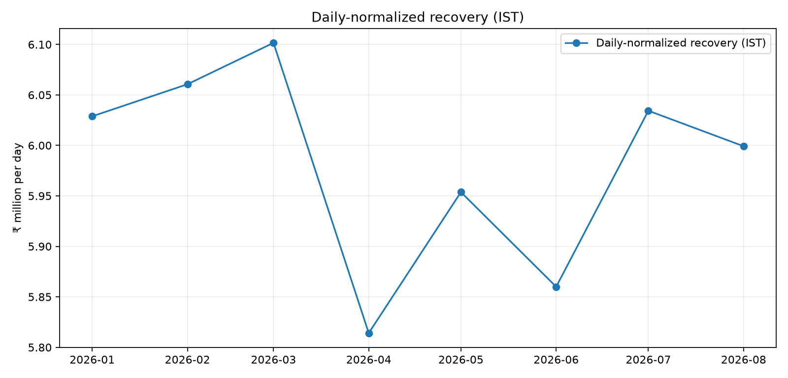

Collections performance: independent reconstruction
January–August 2026 · IST-normalized successful payments · Fixed book denominator · August observed through 8 Aug only
Unique successful payment events
17,534
After payment_id deduplication
Recovered amount, Jan–Jul
₹126.76 Cr
Successful status only
Jan→Jul recovery/day change
+0.09%
Not an 11% sustained improvement
Duplicate successful amount
₹2.59 Cr
346 duplicate success rows rejected
Executive read: The supplied extract covers Jan–Aug 2026, not a full 12 months. After payment-ID deduplication and daily normalization, recovery per day changes by +0.09% from January to July. The February-to-March total rises +11.46%, but the per-day change is only +0.68% as March has 31 days versus February's 28. The data does not support sustained +11% operational improvement. August is partial.
Recovery trend


Monthly performance
| Month | Recovery | 30-day equivalent* | MoM / day | Payers |
|---|---|---|---|---|
| 2026-01 | ₹18.69 Cr | ₹18.09 Cr | — | 2,369 |
| 2026-02 | ₹16.97 Cr | ₹18.18 Cr | +0.53% | 2,167 |
| 2026-03 | ₹18.91 Cr | ₹18.30 Cr | +0.68% | 2,425 |
| 2026-04 | ₹17.44 Cr | ₹17.44 Cr | -4.71% | 2,298 |
| 2026-05 | ₹18.46 Cr | ₹17.86 Cr | +2.40% | 2,350 |
| 2026-06 | ₹17.58 Cr | ₹17.58 Cr | -1.58% | 2,286 |
| 2026-07 | ₹18.71 Cr | ₹18.10 Cr | +2.98% | 2,337 |
| 2026-08 | ₹4.80 Cr | ₹18.00 Cr | -0.58% | 618 |
*30-day equivalent = daily recovery × 30; denominator is total current outstanding balance. This is normalization, not forecast.
What to trust / investigate
- Trust provisionally: successful payment status after payment_id deduplication; fixed denominator of all 30,000 accounts.
- Data-quality impact: 346 duplicate successful rows contain ₹2.59 Cr of repeated amount.
- Time: 310 calls (0.34%) shift month after timezone normalization; 60,865 (66.63%) shift hour.
- Attribution: targeting is not the same as a verified contact; last-touch attribution is sensitive to window choice.
Investment decision
Do not commit the full ₹10 Cr based on observational data alone. Run a randomized or phased pilot for the strongest candidate, with holdout and pre-registered outcomes.
- Measure incremental successful recovery net of reversals and costs.
- Stratify by DPD, loan type, client, geography and channel.
- Track complaints and cost per incremental ₹ recovered.
- Scale only if conservative incremental ROI is positive.
Generated from supplied synthetic assignment data. Findings are descriptive; causal claims require a credible experiment or counterfactual design. See executive_memo.md and analysis tables for definitions and caveats.